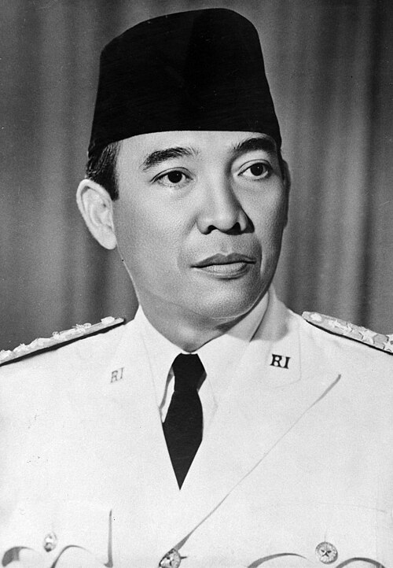
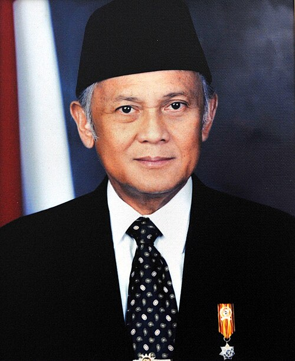
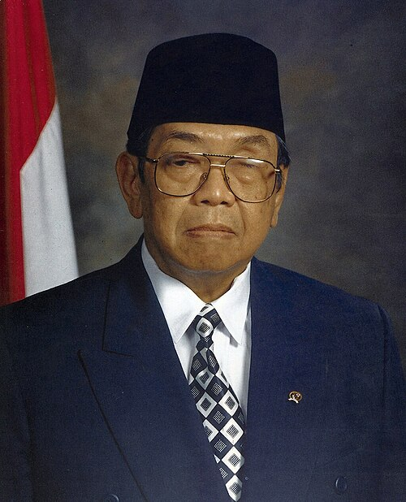
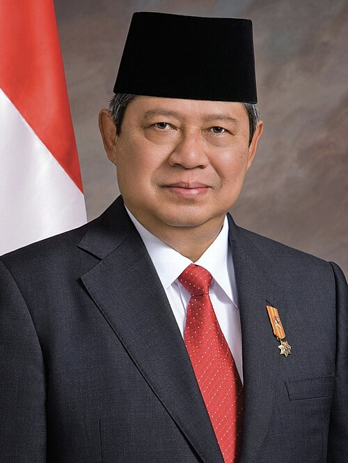
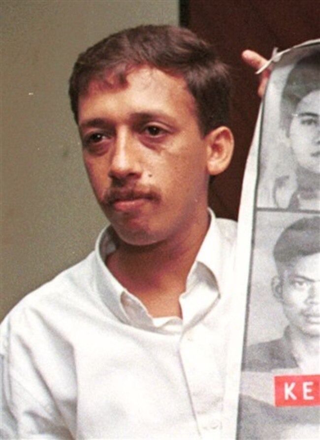

PKBM Penerus Bangsa • Edisi Hari Sumpah Pemuda 28 Oktober
Sebelum memulai misi permainan, mari masuki lorong kehormatan pahlawan bangsa. Klik setiap pigura foto emas di bawah ini untuk merenungkan mutiara hikmah kepemimpinan, keberanian, dan integritas yang mereka wariskan!

"Gotong royong adalah pembantingan tulang bersama, pemerasan keringat bersama. Bangsa yang besar adalah bangsa yang menghargai jasa para pahlawannya!"

"Keberhasilan bukan milik orang pintar semata, melainkan milik mereka yang memegang teguh integritas ilmu dan cinta tulus pada tanah air."

"Tidak penting apa agama atau sukumu. Kalau kamu bisa berbuat baik untuk sesama manusia, orang tidak akan pernah tanya apa agamamu."

"Perdamaian dan keutuhan NKRI hanya bisa dijaga jika kita selalu mengedepankan dialog, musyawarah, dan menempatkan persatuan di atas segalanya."

"Kita harus bersikap tenang walau takut, membela kebenaran walau diancam. Keberanian sejati adalah melawan ketidakadilan tanpa kekerasan."
Bantu Shan menuntaskan 4 Misi Kehormatan untuk memenangkan Piala Negosiator Ulung Pancasila!
"Berikan lapangan seharian penuh kepada Tim Futsal karena jumlah pemainnya lebih banyak dibanding anak-anak sanggar tari."
"Langsung voting siapa yang suaranya paling keras. Kelompok yang kalah dilarang menggunakan lapangan sama sekali."
"Bagi waktu secara adil: Pukul 07.30–11.30 WIB untuk Gladi Resik Sanggar Tari (udara sejuk, formasi tenang), lalu pukul 14.30–17.30 WIB untuk Final Futsal (cuaca bersahabat, penonton ramai). Kedua acara sukses bersama!"